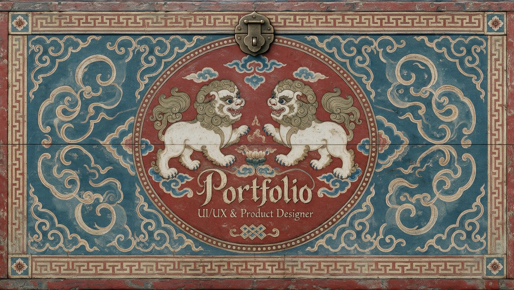
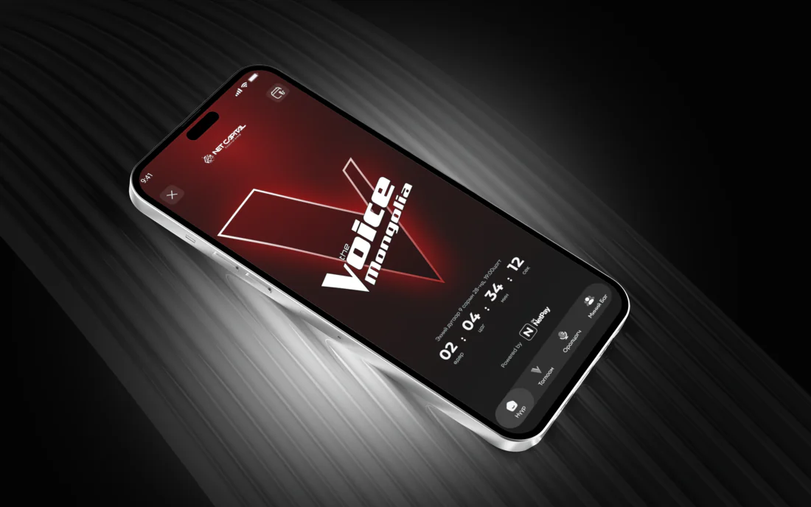
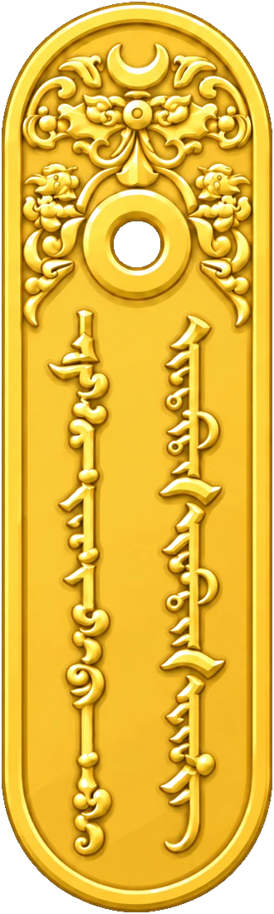

Playground
Small studies in motion, light and material — pulled from the case studies and from the site itself.

Opening the chest
The landing page: a painted chest that opens as you scroll, and the camera pushes into the dark. Frames, not a video.
A loan, one step at a time
The amount on a hand-sized key, then the term, then the payment day — every step marked, every one editable.
Opening a trust fund
Naming a savings fund and giving it a face. Those icons are the app’s only ornament.
Paying an invoice
Merchant, amount and what happens next, with the way out on the same screen as the way on.
Voting live
Casting a vote during a live round of The Voice Mongolia, while the show is on air.

A phone on ribbed black
The Voice cover: one ellipse fitted to the handset carries both the spotlight and the depth-of-field blur.

The gerege
It hangs from the About page’s title card and swings when you take hold of it.
Mountains and cloud
The border that closes every page. The tile is a painted strip followed by its own reflection, so the repeat has no seam.